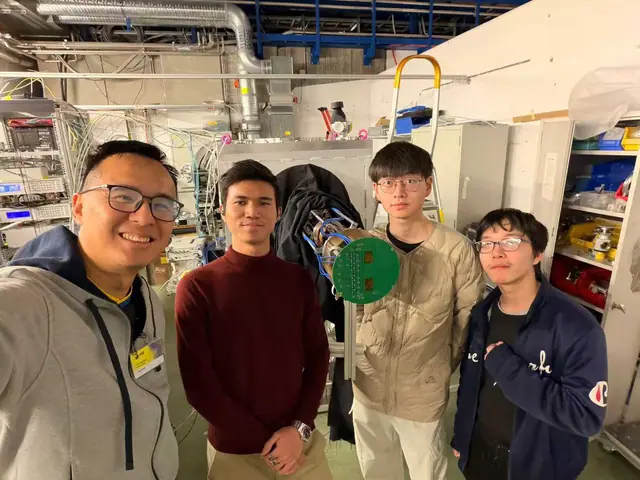
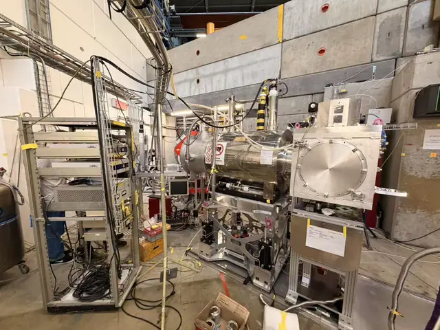
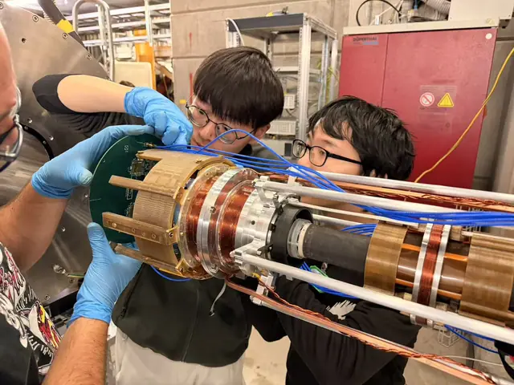
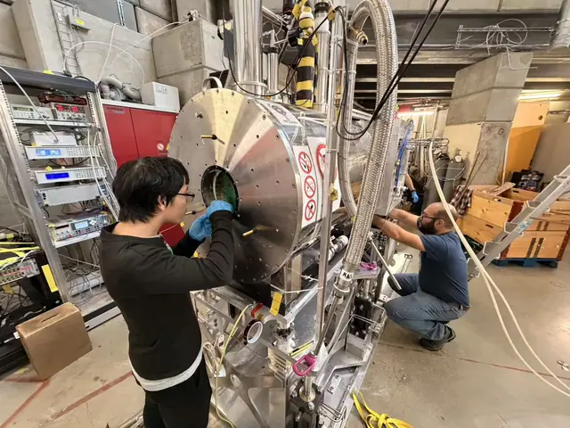

Our team recently took part in a test beam at PSI in December 2025 to evaluate the performance of the upgraded muon trigger detector developed for the muEDM experiment. This was our third beam test at PSI for the muEDM project, in which we demonstrated an enhanced design built specifically for operation in high magnetic fields and vacuum.
Special thanks go to Guan Ming, Xingyun, Tianqi, and Yonghao for their dedicated work in developing this reliable muon trigger detector and its data acquisition (DAQ) readout chain. Their contributions were crucial to improving the detector and to its successful operation under demanding experimental conditions. A comprehensive analysis of the collected data will be carried out in the coming months to assess the detector’s performance.








2025年12月，课题组赴瑞士保罗谢勒研究所（PSI）参加束流测试，检验为muEDM实验研制的升级版缪子触发探测器的性能。这是我们为muEDM项目在PSI开展的第三次束流测试，此次展示了专为强磁场和真空环境运行而设计的改进方案。
特别感谢黄冠铭、黄幸运、胡天齐和曾永浩为研制这一可靠的缪子触发探测器及其数据获取（DAQ）读出链所付出的努力。他们的工作对改进探测器并使其在严苛的实验条件下顺利运行至关重要。未来几个月，我们将对采集的数据进行全面分析，以评估探测器性能。